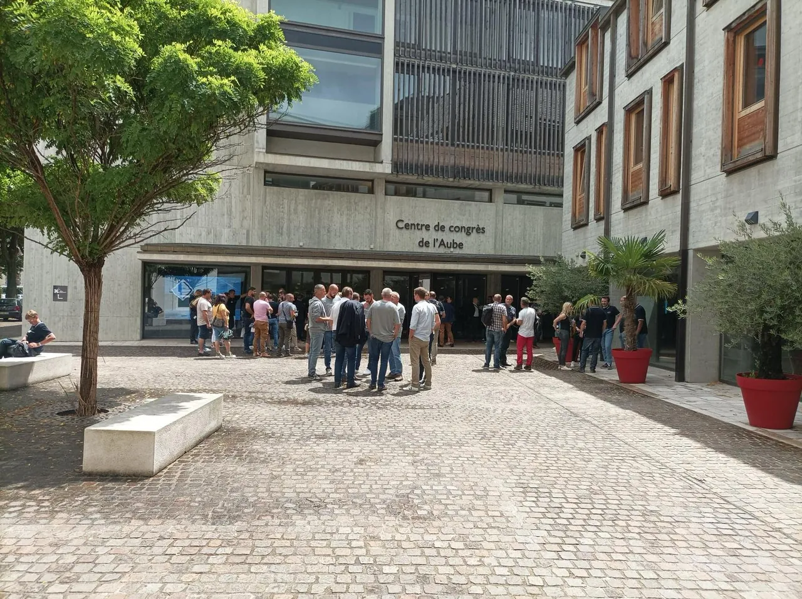
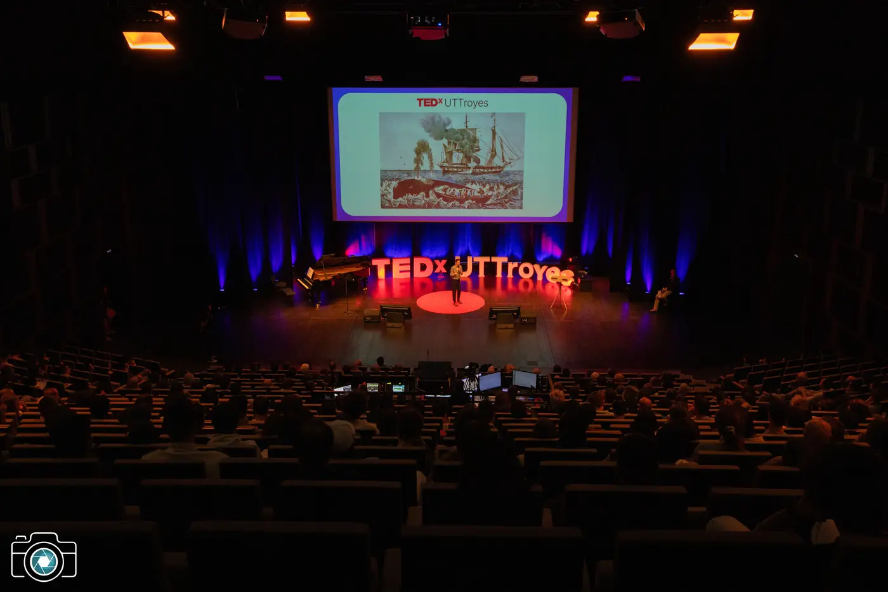
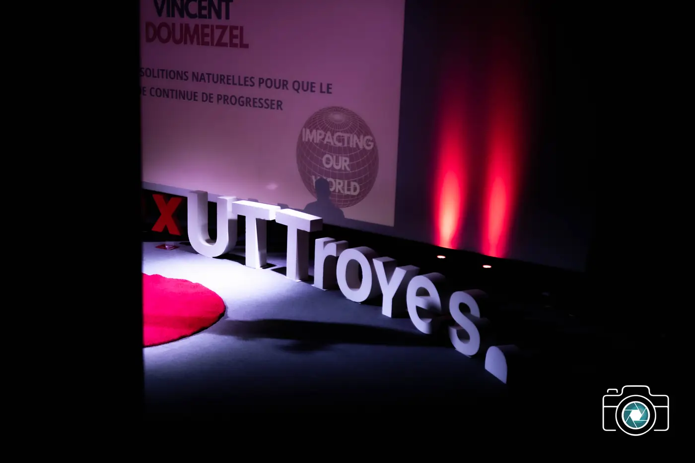
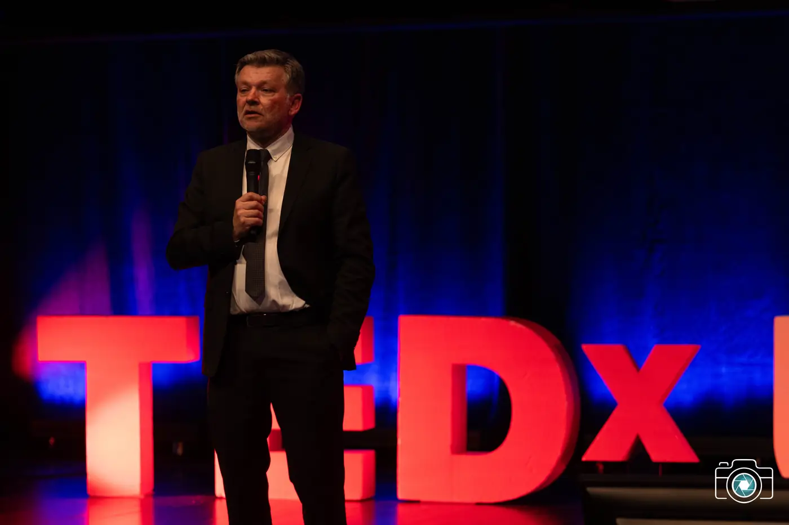
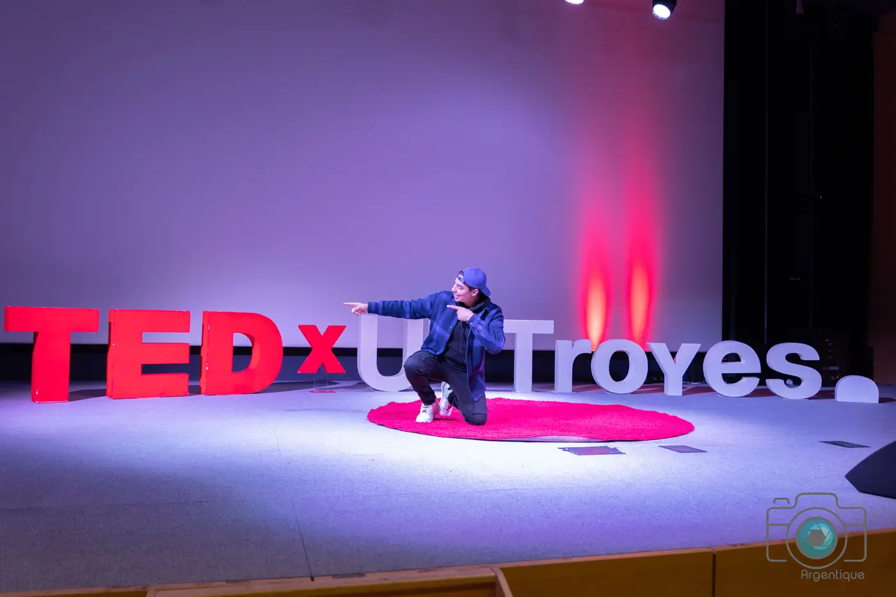
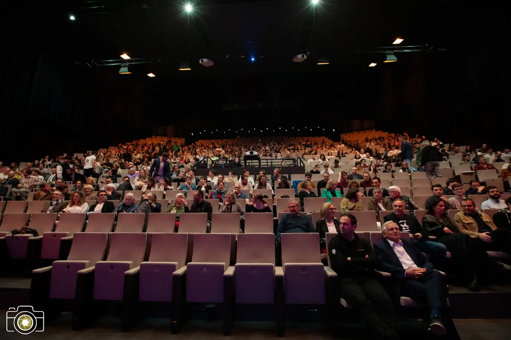
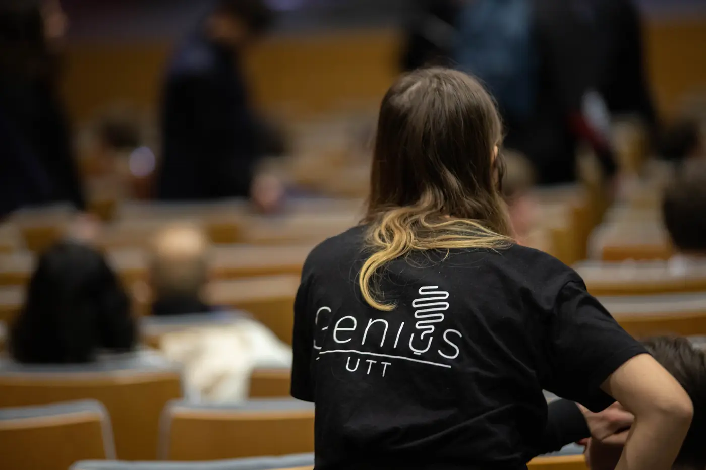

Dixième édition
Franchir ou s'adapter ?
fig. 01 : la limite. Se franchit ou s'apprivoise, ne s'ignore jamais.
Le compte à rebours est lancé : l'événement commence le jeudi 18 mars 2027 à 19h30.
Franchir
Six noms s'apprêtent à franchir
Le record tombe, le prototype décolle, une voix s'élève là où personne ne parlait. Franchir, c'est décider que la ligne était provisoire. Le 18 mars, six talks racontent ce geste depuis la scène troyenne : dix-huit minutes chacun, pas une de plus. Les annonces tomberont une par une d'ici mars.
- Intervenant·e 01 Nom sous embargo annonce : à venir
- Intervenant·e 02 Nom sous embargo annonce : à venir
- Intervenant·e 03 Nom sous embargo annonce : à venir
- Intervenant·e 04 Nom sous embargo annonce : à venir
- Intervenant·e 05 Nom sous embargo annonce : à venir
- Intervenant·e 06 Nom sous embargo annonce : à venir
S'adapter
Ce qui ne se franchit pas
Le corps compose avec la maladie, la ville avec sa rivière, l'ingénieur avec la matière. S'adapter, c'est faire de la ligne un appui. La soirée aussi compose avec son réel : une date, une salle, huit cents fauteuils. Ici, la ligne plie.

Adresse relevée
Centre de Congrès de l'Aube
2 rue Pierre Labonde
10000 Troyes
Centre de Congrès de l'Aube
Un auditorium au bord du canal, à un quart d'heure à pied de la gare, au ras du centre ancien. Une scène unique, une acoustique dessinée pour la voix, 800 fauteuils pour la dixième édition.
- Jusqu'à 800 personnes configuration auditorium
- À un quart d'heure à pied de la gare bus TCAT et parkings publics à proximité
La soirée, réglée au quart d'heure
- 19h00 Ouverture des portes
- 19h30 Ouverture de la soirée
- 20h50 Entracte de trente minutes
- 22h30 Clôture, puis un temps d'échange
Dix ans
La ligne vient de loin
Neuf éditions, deux années blanches, une seule scène. En 2017, le thème s'appelait déjà To the Limits and Beyond : dix ans plus tard, la question revient, et cette fois il faudra choisir.
Relevé des éditions · 2016 à 2027 · un intervalle par année
- 2016Shape the future
- 2017To the Limits and Beyond
- 2018année blanche
- 2019Thinking outside the box
- 2020année blanche
- 2021Changing codes
- 2022Circulation
- 2023Impacting our world
- 2024Le monde de demain
- 2025Réveiller l'avenir
- 2026Un futur à bâtir
- 2027 Franchir ou s'adapter ? Dixième édition · 18 mars 2027 · vous êtes ici






- 61 talks partagés sur la scène troyenne depuis 2016
- 61 intervenantes et intervenants passés par le plateau
- 800 fauteuils le 18 mars 2027, pas un de plus
Le programme TEDx
Qu'est-ce que TEDx ?
Dans l'esprit des idées qui méritent d'être partagées, TED a créé un programme appelé TEDx. TEDx est un programme d'événements locaux et indépendants qui rassemblent les gens pour partager une expérience proche de celle de TED. Lors de notre événement TEDxUTTroyes, des talks en direct et des vidéos de conférences TED se combinent pour susciter la réflexion et la discussion au sein d'un groupe. Notre événement TEDxUTTroyes est organisé de manière indépendante, sous licence de TED.
Billetterie
La salle s'arrête à 800 fauteuils. C'est la seule limite de la soirée que personne ne franchira.
Billetterie hébergée sur HelloAsso. Aucune donnée n'est collectée sur ce site.